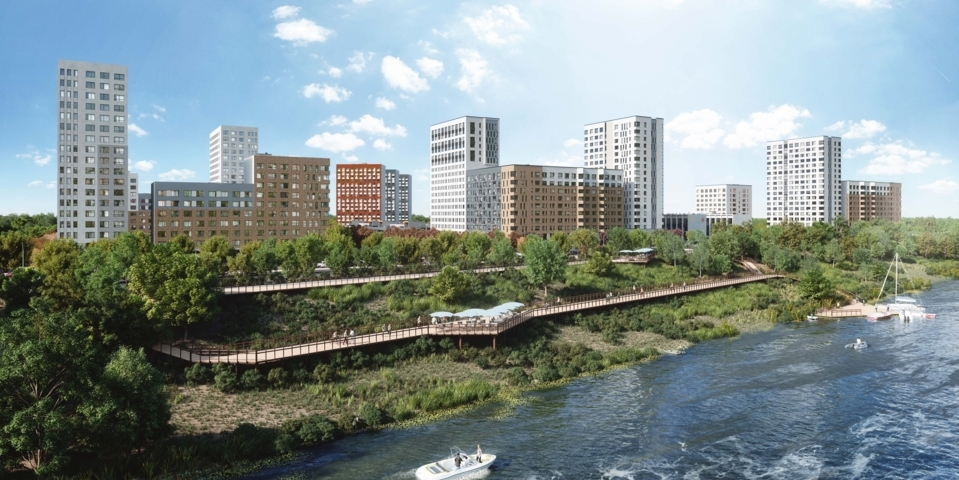
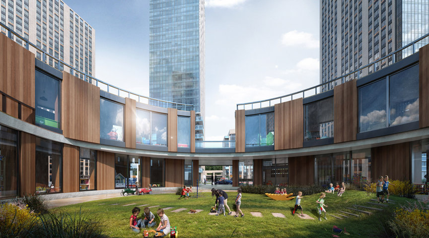

С помощью фотореалистичных изображений, можно увидеть, как будет выглядеть внешне ещё несуществующее здание, квартал. Поэтому 3d визуализация архитектурных проектов, является мощным инструментом для строительных компаний. Её легко может воспринять, как потребитель, так и заказчик. Причём, презентуя объект из самого рентабельного ракурса, 3d архитектурная визуализация является эффективным методом для продвижения товара, а также способствует привлечению инвесторов. Применяется архитектурная визуализация: в создании видео-роликов; в презентациях архитектурного объекта; при создании виртуального тура; на сайтах строительных компаний. Путём фотореалистичной картинки проходит ознакомление с наружностью будущих построек. Благодаря чему, можно сразу увидеть все изъяны проекта, а также соответствие архитектурной концепции всех объектов, находящихся вблизи. Трёхмерную архитектурную визуализацию заказывают не только архитекторы и архитектурные компании, а также дизайнеры для демонстрации интерьера, мебели и т.п. Она даёт возможность достойно конкурировать на рынке рекламным агентствам и целым строительным компаниям. К тому же, использование 3d технологи распространено и среди частных лиц, желающих сделать ремонт наружной части дома.
Целью 3d архитектурной визуализации является эффективная реклама объекта, обеспечивающая ему известность и доверие. Этот метод гарантирует создание имиджа рекламируемому проекту, а также формирование необходимых условий вокруг него. Процесс создания трехмерной архитектурной визуализации является более сложным, чем обычная статичная архитектурная подача. Качество ролика зависит от верно продуманных мельчайших деталей и правильной раскадровке ролика. Этапы трехмерной визуализации: Формулировка сюжетной линии ролика. Сочинение сценария для презентации. Раскадровка 3D ролика. На этом этапе рисуются более значительные кадры, тщательно подбирается цветовая гамма, определяются графические компоненты и прочие композиционные решения. Создание аниматика. Аниматика – это формирование будущего 3Д ролика из обычных объектов сцены. Расстановка виртуальных камер. Создание освещения. Анимирование виртуальных камер. Получив по движению камер и прочих объектов ролика информацию, создаётся монтаж планов 3d ролика. Далее для получения качественной картинки, можно изменить предварительные заготовки сцен и движения камер, также возможно сменить освещение.
С помощью 3d визуализации архитектурных проектов, можно создать модель любого здания, не прибегая к использованию множества непонятных эскизов. Верно изобразив каждую деталь, можно чётко смоделировать образ дома, коттеджа и прочей конструкции. Превосходство данного метода состоит в следующем: возможность создания объёмных моделей проекта; шанс рассмотреть все тонкости ещё несуществующего проекта с разных ракурсов при разных погодных условиях, что позволяет определить наличие дефектов конструкции или же её достоинства; возможность увидеть будущий проект в любое время суток; возможность увидеть окружающие объекты вокруг проекта; возможность полностью рассчитать необходимый материал для возведения будущей постройки; возможность создания коммерческих презентаций.